<div class="textcontainer">
<p class="margin"> </p>
<h3>Week 7: Electronic Outputs</h3>
<h4>Assignment: Minimum Viable Product for Final Project</h4><br>
<h4 style="text-align:center"><u>Intro</u><h4><br>
<h5>I really enjoyed this week's assignment, as it was the first piece of work I did related to my final project. I made the <u><b>collecting bin</b></u> (trash holder) for my river cleaning machine. My aim was to have the bin show when it is full in terms of volume and weight of trash. I did the following:</h5>
<ul>
<li>Created makeshift <b>copper-velostat sensors</b> to measure weight (I did this because I intially thought that the lab was out of load cells)</li>
<li>Wired, calibrated, and coded my <b>load cells</b></li>
<li>Wired and coded a <b>ultrasonic sensor, screen, and reset button</b></li>
<li>Created <b>cases</b> for the components and <b>stands/mounts</b> load cells</li>
<li>Prototyped and worked on my <b>water wheel</b> (to power the sensor)</li>
</ul><br>
<h4 style="text-align:center"><u>Velostat Weight Sensors</u><h4><br>
<h5>
I mistakenly thought that the lab was out of load sensors, so I set out to create a makeshift one myself. I layered Velostat between two pieces of cardboard lined with parallel copper strips. Pressing on the mat caused the resistance to drop. I measured this using the laboratory DC power supply, tracking the increase in current against increased weight/pressure on the sensor. <br><br>
During assembly, I struggled with the copper tape’s strong adhesive, which blocked conductivity when placed on the velostat. My solution was to lay the copper tape with the non-sticky side down and then secure it in place with cloth tape. Below are photos and videos of my 2 prototypes, along with the materials used to make them:
</h5><br>
<h5><b>
Small:
</b></h5>
<div style="display: flex; gap: 10px; align-items: stretch;">
<p>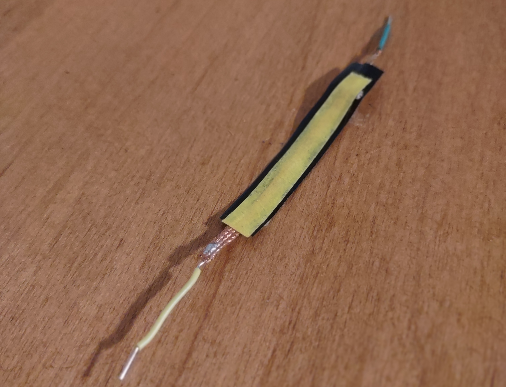</p>
<video src="SmallVelo.mp4" autoplay loop muted playsinline
style="height: 350px; width: auto; object-fit: contain; border: 1px solid #ccc;"></video>
</div><br>
<h5><b>
Medium:
</b></h5>
<div style="display: flex; gap: 10px; align-items: stretch;">
<img src="Medium Velo materials.jpg" alt="Description"
style="height: 300px; width: auto; object-fit: contain;"/>
<p>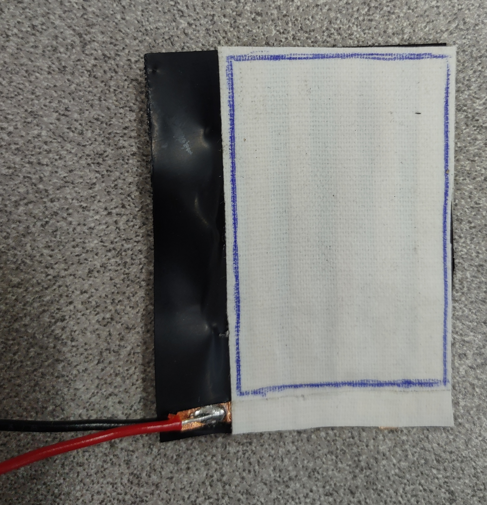</p>
<video src="MediumVelo.mp4" autoplay loop muted playsinline
style="height: 300px; width: auto; object-fit: contain; border: 1px solid #ccc;"></video>
</div><br>
<h5>
I then created a life-size model of my sensor (1.5 x 1.5ft), upon which my collecting bin could be placed to measure its weight. Below are videos of how it looks and the process of making it (it took far longer since each strip had to be insulated individually). I didn't get to calibrate its values, as ultimately I found that the lab did have load cells.
</h5><br>
<h5><b>
Large:
</b></h5>
<div style="display: flex; gap: 10px; align-items: stretch;">
<p>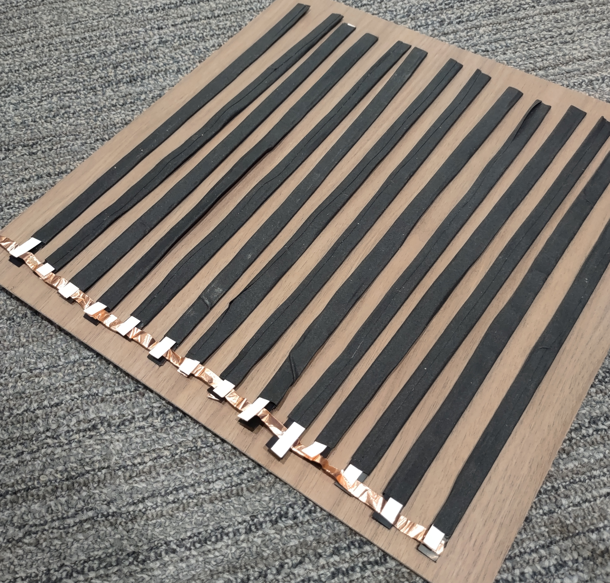</p>
<video src="LargeVeloSped.mp4" autoplay loop muted playsinline
style="height: 500px; width: auto; object-fit: contain; border: 1px solid #ccc;"></video>
</div><br><br>
<h4 style="text-align:center"><u>Load Cell Sensors</u><h4><br>
<h5>
The next thing I did was wire and configure load sensors to measure the weight. I used 4 SparkFun 50 kg load cells - one at each corner of the board on which the bin rests, so that the weight is distributed evenly. These were wired through an HX711 amplifier to an ESP32 microcontroller. Although the HX711 website recommended a load Cell Combinator board to connect the amplifier to the sensors, the lab didn’t have one, so I manually wired the four load cells on a breadboard in a Wheatstone bridge configuration to replicate the combinator’s function (this took 2-3 hours, with some much-needed help from Bobby). Here are some photos below:
</h5><br>
<div style="display: flex; gap: 10px; align-items: stretch;">
<p>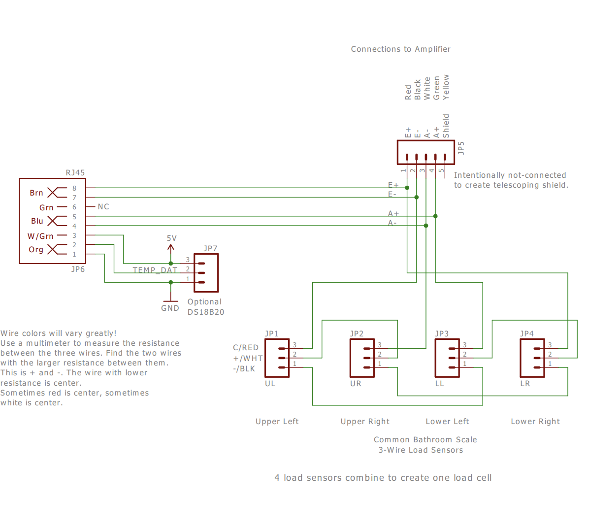</p>
<p>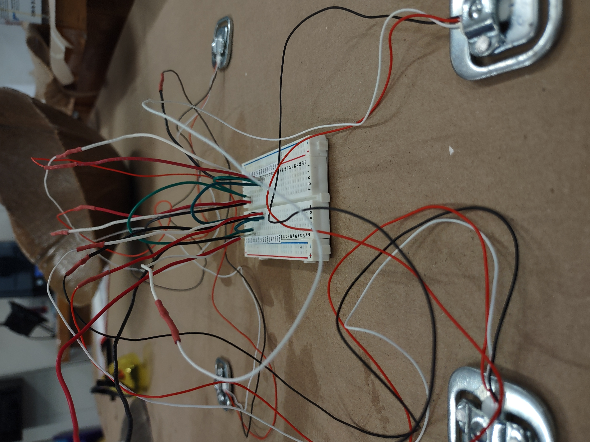</p>
</div><br>
<h5>
I then soldered the load cells' 12 wires to thicker pin-to-pin wires, and heat shrinked the connection. Finally, I wired the sensors to the HX711 and connected that to the microcontroller:
</h5>
<div style="display: flex; gap: 10px; align-items: stretch;">
<p>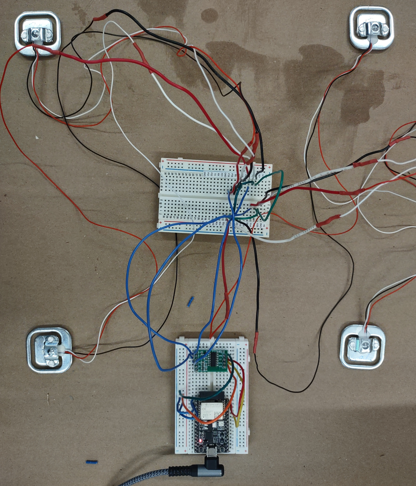</p>
<p>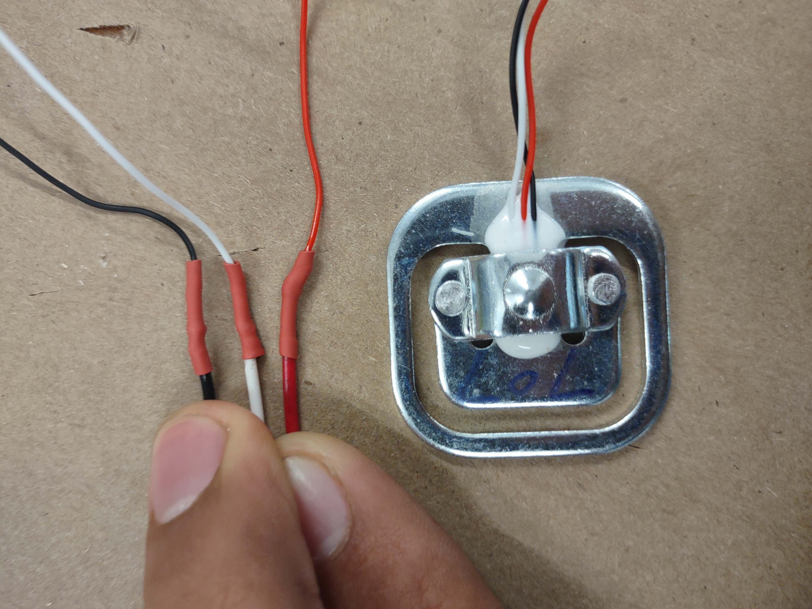</p>
</div><br><br>
<h4 style="text-align:center"><u>Cases, Stands, and Mounts</u><h4><br>
<h5>
For my weight sensors to work, I had to fix them in place and raise them to a height of 8cm so that the board on wich the bin sat didn't press on and damage my wiring. I modeled two components: a fastener on which the weights fit snugly, and a platform to raise it. I also made sure that the platform had a hole fit for an m8 screw, to be fastened to the board so that it didn't shift horizontally and could move up and down smoothly:
</h5><br>
<div style="display: flex; gap: 10px; align-items: stretch;">
<iframe src="https://muwci14.autodesk360.com/shares/public/SH286ddQT78850c0d8a434000fb681fd84bf?mode=embed" width="640" height="480" allowfullscreen="true" webkitallowfullscreen="true" mozallowfullscreen="true" frameborder="0"></iframe>
<p>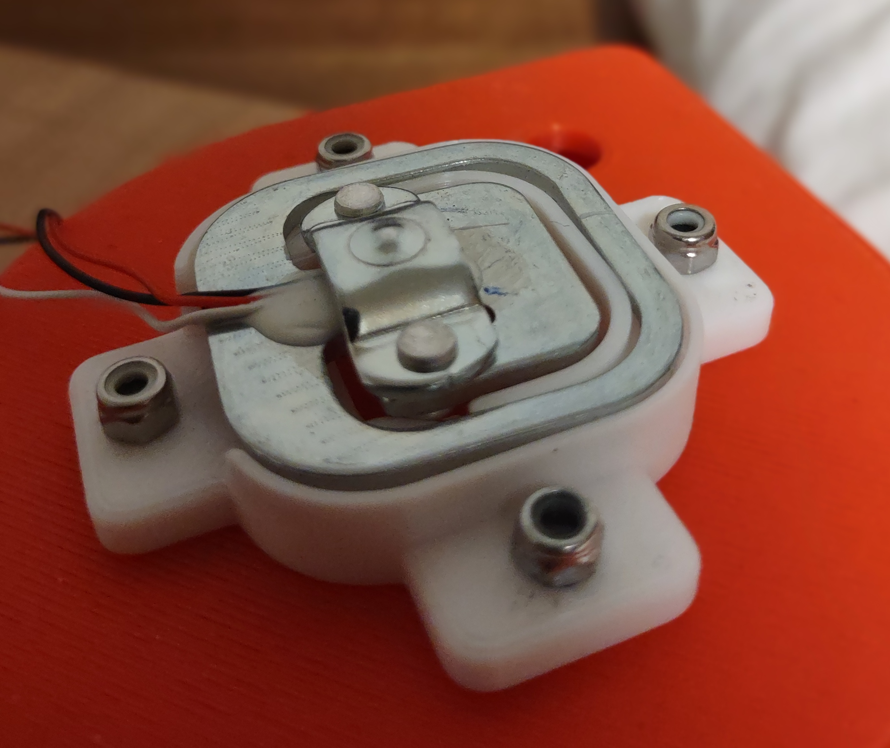</p>
</div><br>
<div style="display: flex; gap: 10px; align-items: stretch;">
<iframe src="https://muwci14.autodesk360.com/shares/public/SH286ddQT78850c0d8a4f63a7485c21aa32e?mode=embed" width="640" height="500" allowfullscreen="true" webkitallowfullscreen="true" mozallowfullscreen="true" frameborder="0"></iframe>
<p>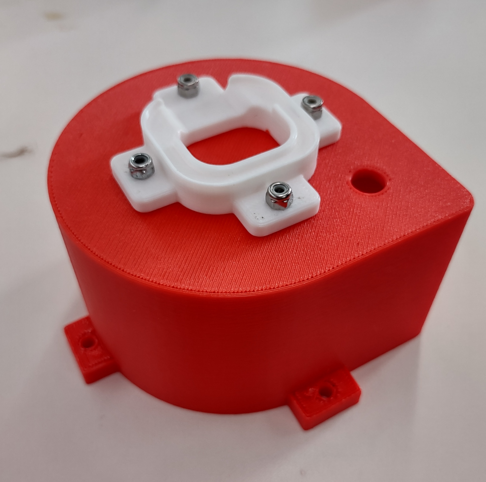</p>
</div><br>
<h5>
I also made a box for the microcontroller and wires (the reason for my 3d printing it was simply because I wanted it top be waterproof). I left a hole at the top and sides for wiring to pass through. Furthermore, like the other two componenents before, it had rectangular extensions with holes to screw into the ground.
</h5>
<div style="display: flex; gap: 10px; align-items: stretch;">
<iframe src="https://muwci14.autodesk360.com/shares/public/SH286ddQT78850c0d8a4a3943629c5b508fc?mode=embed" width="640" height="480" allowfullscreen="true" webkitallowfullscreen="true" mozallowfullscreen="true" frameborder="0"></iframe>
<p>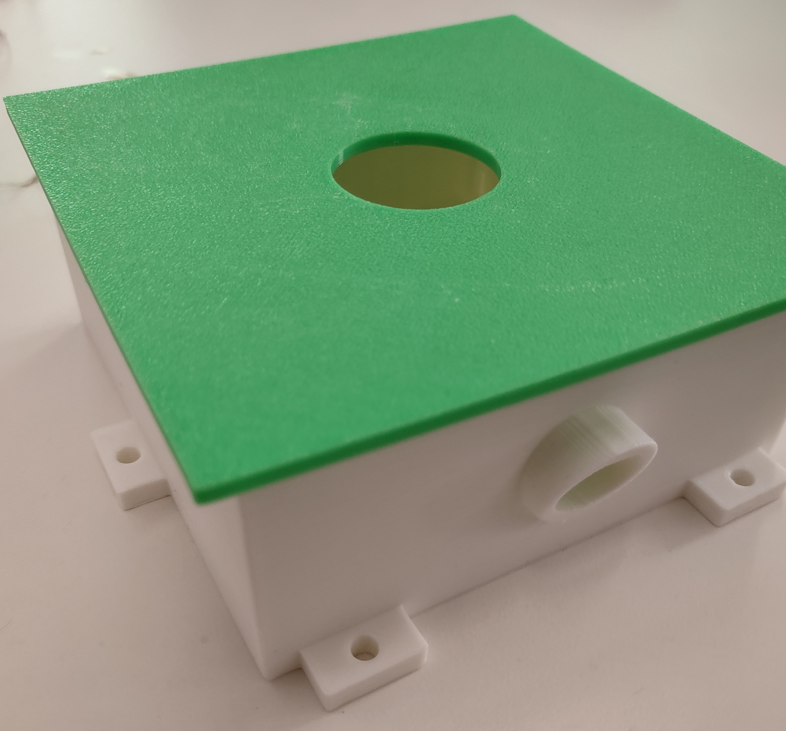</p>
</div><br>
<h5><b>
Final setup photos:<b></h5>
<div style="display: flex; gap: 10px; align-items: stretch;">
<p>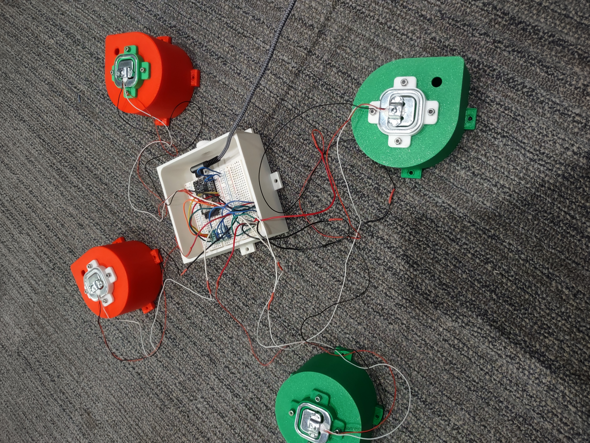</p>
<p>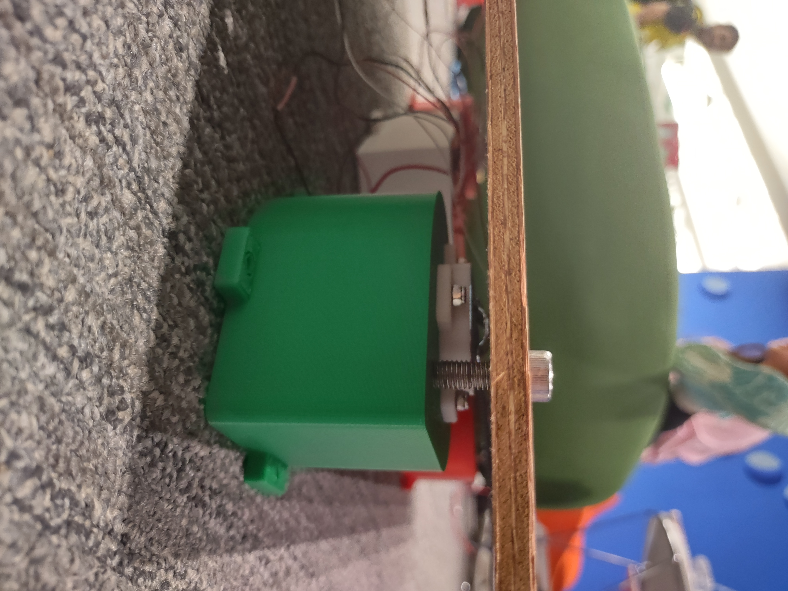</p>
<p>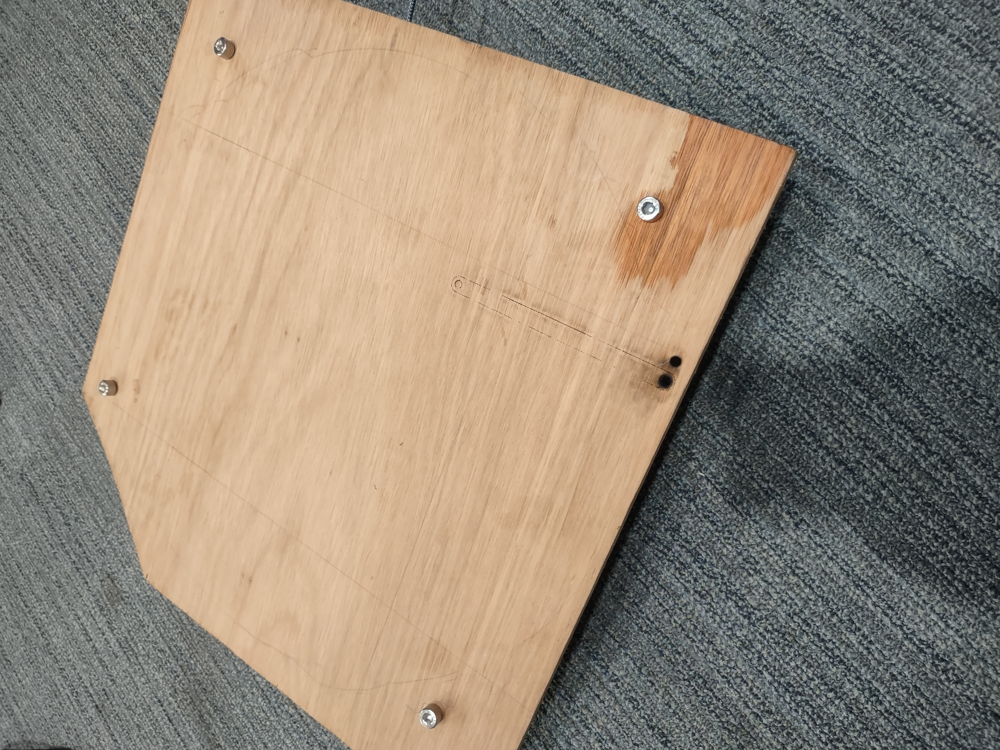</p>
<p>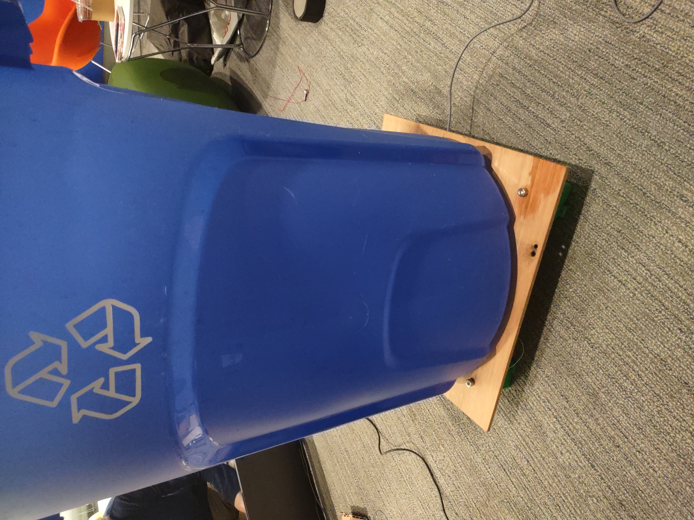</p>
</div><br>
<br><br>
<h4 style="text-align:center"><u>Calibration and coding</u><h4><br>
<h5>
It took many attempts at rewiring before the sensors began functioning. Since the ouput on the serial monitor was in arbitrary units rather than kilograms, I ran a program to find an appropriate calibration factor. I started with the container empty, then placed known weights inside (using varying volumes of water). I monitored the change in readings and adjusted the calibration factor in real time by pressing + or - in the Serial Monitor until the output matched the known weight. Below is the calibration code:
</h5>
<pre style="font-size: 16px;"><code class="cpp">
#include "HX711.h"
#define DOUT 4
#define CLK 5
HX711 scale;
float calibration_factor = -17400;
void setup() {
Serial.begin(9600);
Serial.println("HX711 calibration sketch");
Serial.println("Remove all weight from scale");
Serial.println("After readings begin, place known weight on scale");
Serial.println("Press + or a to increase calibration factor");
Serial.println("Press - or z to decrease calibration factor");
scale.begin(DOUT, CLK);
scale.set_scale();
scale.tare();
long zero_factor = scale.read_average();
Serial.print("Zero factor: ");
Serial.println(zero_factor);
}
void loop() {
scale.set_scale(calibration_factor);
Serial.print("Reading: ");
Serial.print(scale.get_units(), 3);
Serial.print(" kg");
Serial.print(" calibration_factor: ");
Serial.print(calibration_factor);
Serial.println();
if(Serial.available())
{
char temp = Serial.read();
if(temp == '+' || temp == 'a')
calibration_factor += 10;
else if(temp == '-' || temp == 'z')
calibration_factor -= 10;
}
}
</code></pre><br>
<h5>
I then verified my calibration factor by testing volumes of water from 0 to 64 fluid ounces, moving up by increments of 4 oz., then jumping to 124 oz., and sampling 13 values at each instance. After the first try, I had to recalibrate from -19520 to -19040, yet the second try was far more successful. Below are photos of my values table, and 2 graphs: the first plotting my measured values against the projected/expected values for each volume (1 fluid oz. of water is 0.118 kg), and the second plotting the line of best fit for measured values. The best fit turned out to be y=0.119x, which is 0.001 away from the expected value! Pretty good!
</h5><br>
<p>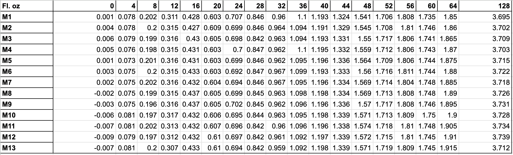</p><br><br>
<p>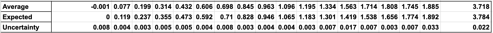</p><br><br>
<h5><a href='https://docs.google.com/spreadsheets/d/1kDFuQ9lAUT3kbE04K-puqO5N5k8gLyG8nLfo6ECp_ls/edit?usp=sharing' target="blank">See this table</a></h5>
<br>
<div style="display: flex; gap: 10px; align-items: stretch;">
<p>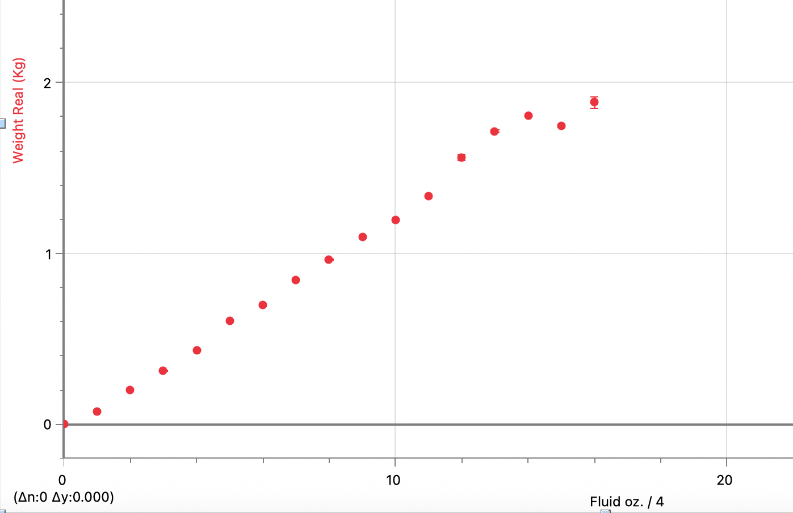</p>
<p>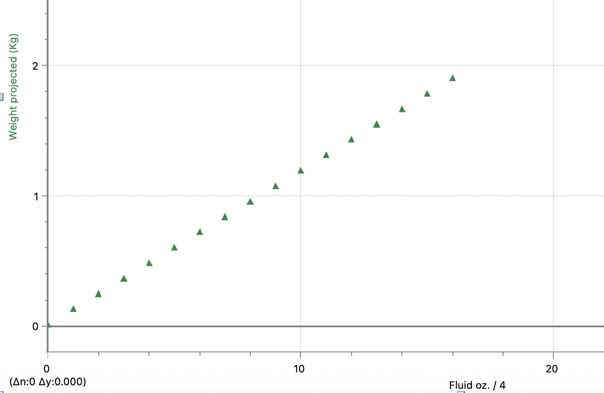</p>
</div><br>
<p>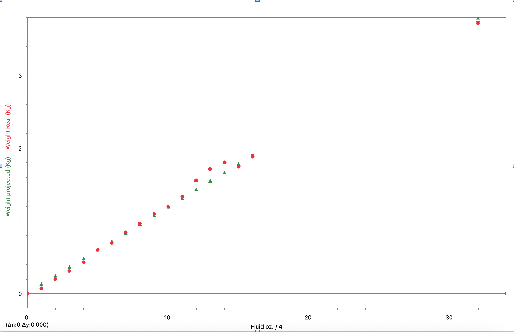</p><br>
<p>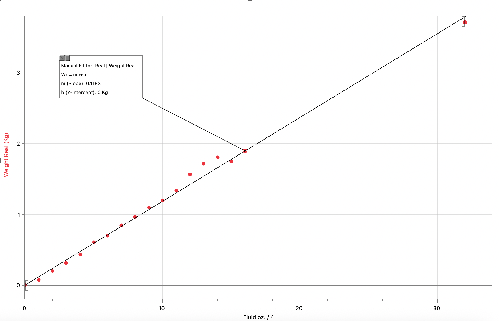</p><br><br>
<h5>
The few inconsistencies I have in my graph can be explained away as a miscalibration of the weight of the container as I removed and refilled it. After confirming my calibration factor I used it to create a simple code that prints the weight:
</h5>
<pre style="font-size: 16px;"><code class="cpp">
#include "HX711.h"
#define calibration_factor -19040.00
#define DOUT 4
#define CLK 5
HX711 scale;
void setup() {
Serial.begin(9600);
scale.begin(DOUT, CLK);
scale.set_scale(calibration_factor);
scale.tare();
}
void loop() {
Serial.print("Reading: ");
Serial.print(scale.get_units(), 3);
Serial.println(" kg");
}
</code></pre><br>
<h4 style="text-align:center"><u>Ultrasonic sensor, screen, and button</u><h4><br>
<h5>
Next, I created a sensor to report on how full the bin is, using an ultrasonic sensor that measures distance from the lid to the top of the waste pile. I wired an OLED to show these values as percentage alerts: showing when the bin was 70%, 80%, and 90% full. After the 90% alert, the user must manually reset the system (and empty the trash in the process) - the reset can happen either through pressing the button or typing 'reset' into the serial monitor. In the future, I hope to send these alerts as SMS messages using a GSM module and SIM card. I also want to integrate the weight sensor into this code, so that it too can generate error messages. Below is a video of the system and a copy of the code.
</h5><br>
<div style="display: flex; align-items: flex-start; gap: 20px;">
<div style="flex: 1;">
<pre style="font-size: 16px;"><code class="cpp">
#include <Wire.h>
#include <Adafruit_GFX.h>
#include <Adafruit_SSD1306.h>
#define SCREEN_WIDTH 128
#define SCREEN_HEIGHT 64
#define OLED_RESET -1
Adafruit_SSD1306 display(SCREEN_WIDTH, SCREEN_HEIGHT, &Wire, OLED_RESET);
const int trigPin = D1;
const int echoPin = D2;
const int buttonPin = D3;
float duration, distance;
unsigned long previousMillis = 0;
const unsigned long interval = 500; // 0.5 seconds
bool alerted70 = false;
bool alerted80 = false;
bool alerted90 = false;
bool locked = false;
void setup() {
pinMode(trigPin, OUTPUT);
pinMode(echoPin, INPUT);
pinMode(buttonPin, INPUT_PULLUP);
Serial.begin(9600);
if (!display.begin(SSD1306_SWITCHCAPVCC, 0x3C)) {
Serial.println(F("OLED failed"));
while (true);}
display.clearDisplay();
display.setTextSize(2); // Bigger font
display.setTextColor(SSD1306_WHITE);
display.setCursor(0, 0);
display.println("System Ready");
display.display();}
void loop() {
// Serial reset (optional)
if (Serial.available() > 0) {
String input = Serial.readStringUntil('\n');
input.trim();
if (input.equalsIgnoreCase("reset")) {
resetSystem();}}
// Button reset
if (digitalRead(buttonPin) == LOW) {
resetSystem();}
// Sensor reading every 500ms
unsigned long currentMillis = millis();
if (currentMillis - previousMillis >= interval && !locked) {
previousMillis = currentMillis;
digitalWrite(trigPin, LOW);
delayMicroseconds(2);
digitalWrite(trigPin, HIGH);
delayMicroseconds(10);
digitalWrite(trigPin, LOW);
duration = pulseIn(echoPin, HIGH);
distance = (duration * 0.0343) / 2;
if (distance <= 7.6 && !alerted90) {
showMessage("Bin 90% full");
alerted90 = true;
locked = true;}
else if (distance <= 15.2 && !alerted80) {
showMessage("Bin 80% full");
alerted80 = true;}
else if (distance <= 22.8 && !alerted70) {
showMessage("Bin 70% full");
alerted70 = true;}}}
void resetSystem() {
alerted70 = false;
alerted80 = false;
alerted90 = false;
locked = false;
showMessage("System reset.");}
void showMessage(const char* msg) {
display.clearDisplay();
display.setTextSize(2); // Bigger font
display.setCursor(0, 0);
display.println(msg);
display.display();}
</code></pre>
</div>
<div style="flex: 1;">
<video src="SensingProcess.mp4" autoplay loop muted playsinline
style="width: 100%; height: auto; object-fit: contain; border: 1px solid #ccc;"></video>
</div>
</div><br>
<h5>
I connected my OLED's SCL and ground lines to the oscilloscope. The captured waveform shows consistent digital pulses which confirms that the device operates with a fixed timing/clock. The time between clock pulses is approximately 1.24 µs, which translates to a frequency of 806 kHz, which means that the OLED uses a fixed-frequency protocol.
</h5><br>
<p>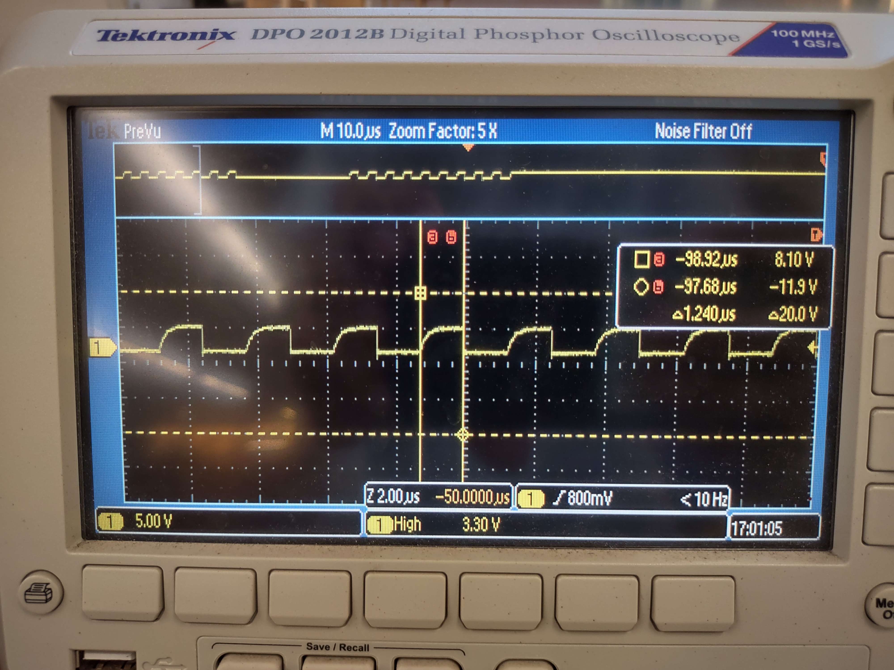</p><br><br><br>
<h5>
Finally, made a container for the ultrasonic sensor and secured to the underside of the bin's lid:
</h5>
<div style="display: flex; gap: 10px; align-items: stretch;">
<iframe src="https://muwci14.autodesk360.com/shares/public/SH286ddQT78850c0d8a4310dddf45019444f?mode=embed" width="640" height="480" allowfullscreen="true" webkitallowfullscreen="true" mozallowfullscreen="true" frameborder="0"></iframe>
<p>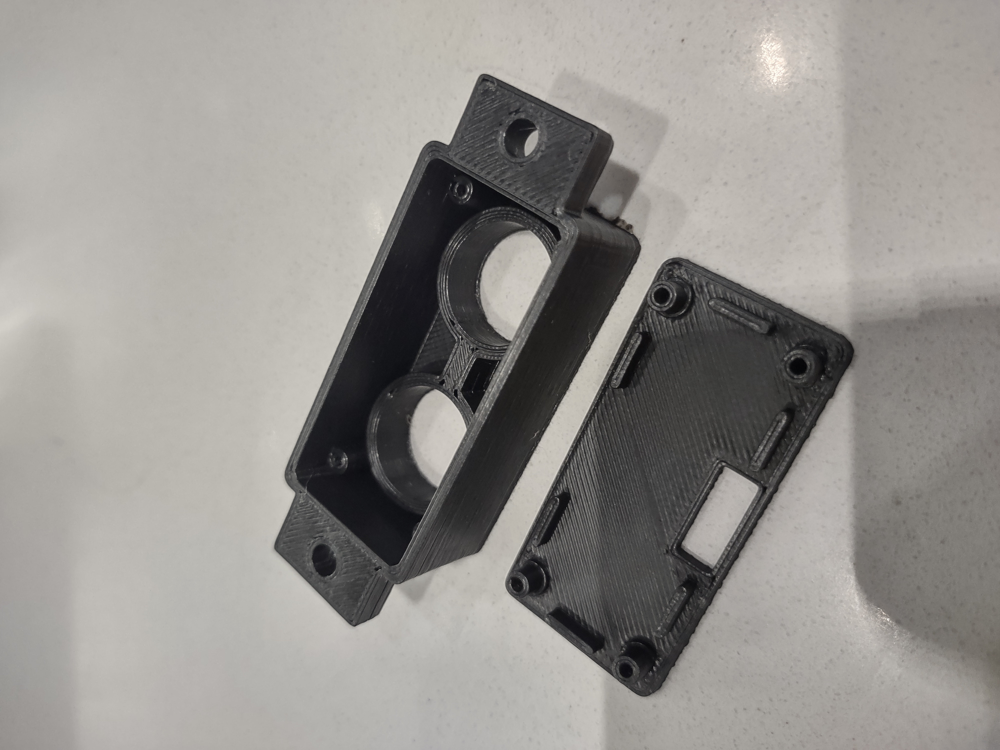</p>
</div><br>
<h5><b>
Final setup photos:<b></h5>
<div style="display: flex; gap: 10px; align-items: stretch;">
<p>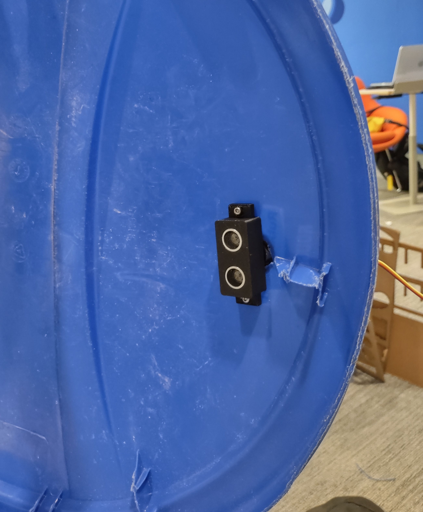</p>
<p>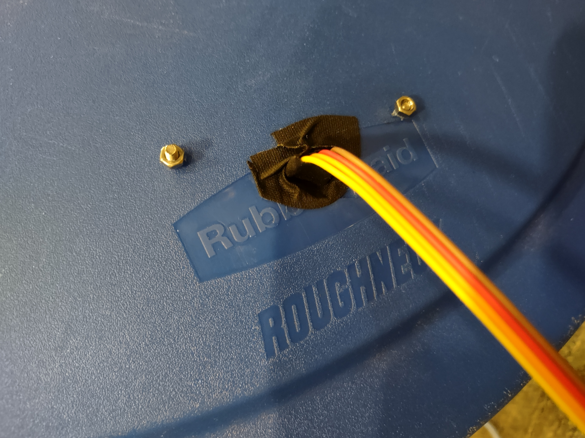</p>
<p>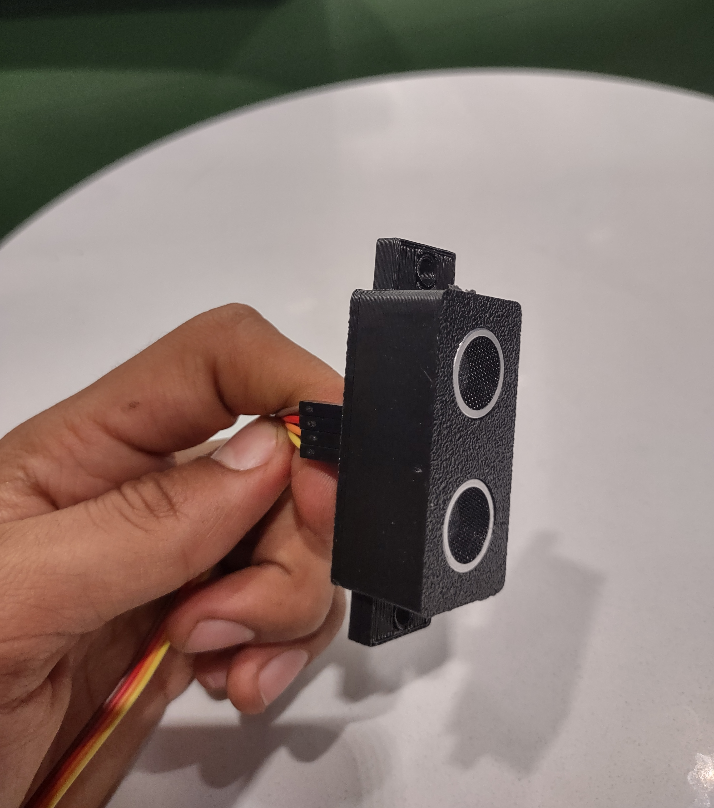</p>
</div><br><br>
<h4 style="text-align:center"><u>Water Wheel</u><h4><br>
<h5>
Lastly, I modeled my water wheel. My plan is to attach half-cut soda cans to the rim of the bicycle wheel to make it spin. I wanted to test the 3 possible configurations of the soda cans to see which one spins fastest. I found that <b>wheel number 1</b> (with the extruded cans) spun the fastest. Now, all that's left is attaching the cans to wheel in real life (I already stripped the tyre of rubber). Here are images/videos of the 3 models:
</h5><br>
<div style="display: flex; gap: 10px; align-items: stretch;">
<p>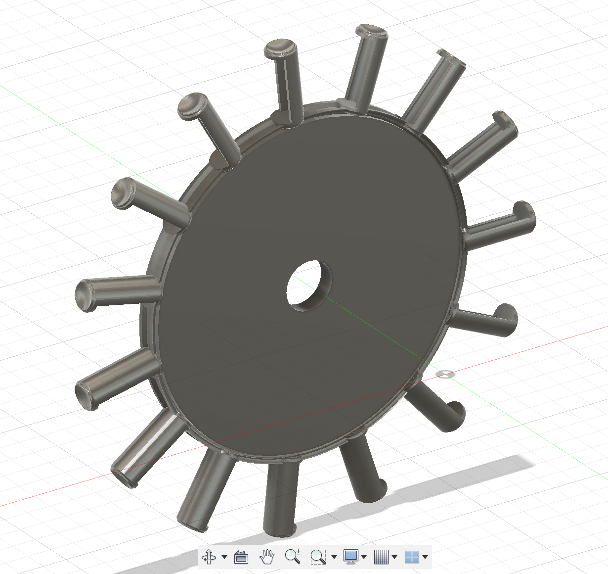</p>
<p>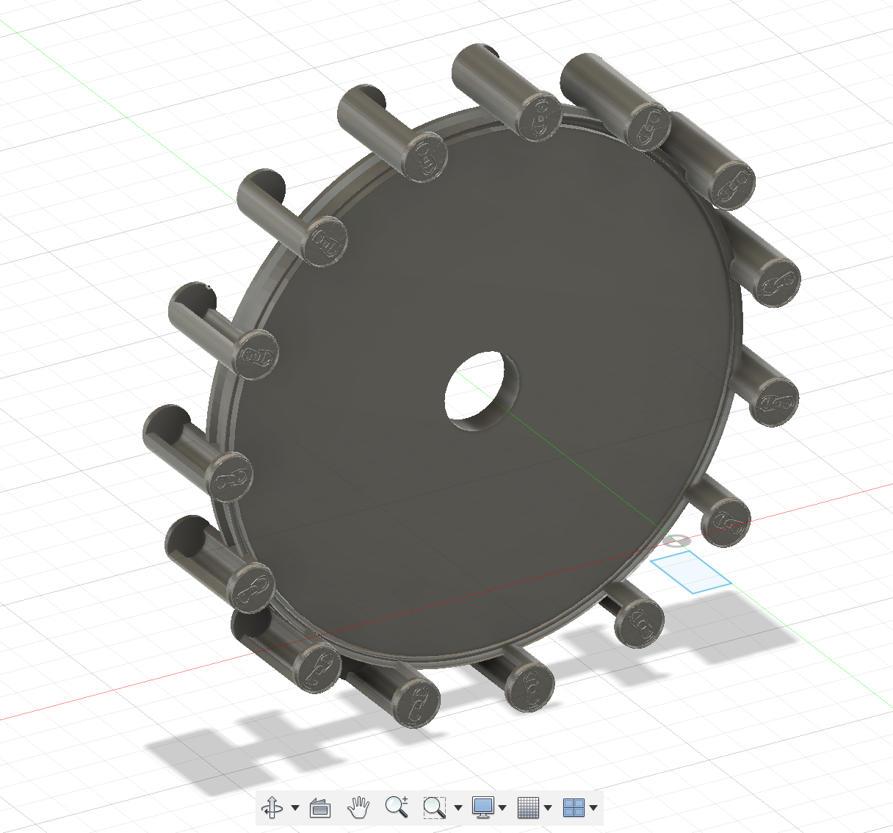</p>
<p>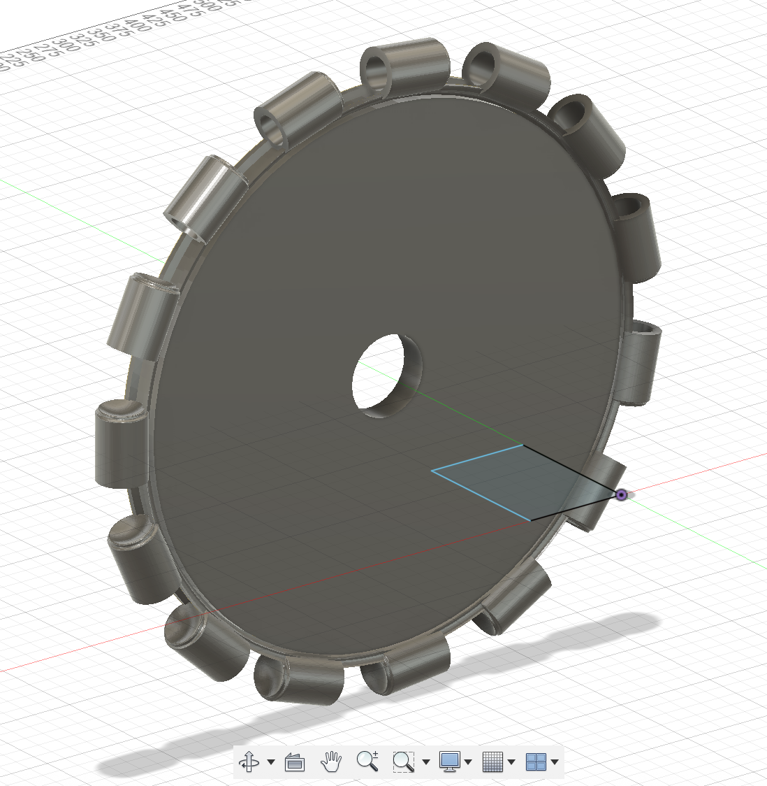</p>
</div><br>
<div style="display: flex; gap: 10px; align-items: stretch;">
<video src="WWheel2.mp4" autoplay loop muted playsinline
style="height: 700px; width: auto; object-fit: contain; border: 1px solid #ccc;"></video>
<video src="WWheel1.mp4" autoplay loop muted playsinline
style="height: 700px; width: auto; object-fit: contain; border: 1px solid #ccc;"></video>
<video src="WWheel3.mp4" autoplay loop muted playsinline
style="height: 700px; width: auto; object-fit: contain; border: 1px solid #ccc;"></video>
</div><br>
<h5><b>
And that's about all!</b>
</h5><br><br>
</div>